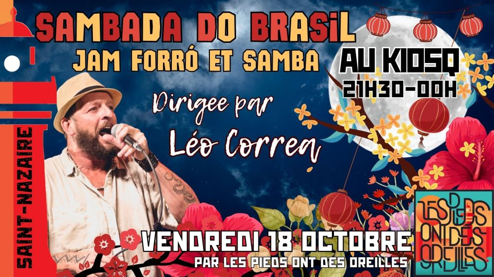

← Toutes les actualitésLa Sambada du KiosqPublié le 16 octobre 2024 Une sorte de jam session forró/samba et un bal brésilien !Dirigé par Léo Corrêa. Gratuit ← Gandaia na Ponte au Skate ParkConcert Madame Forró à Saint-Nazaire →